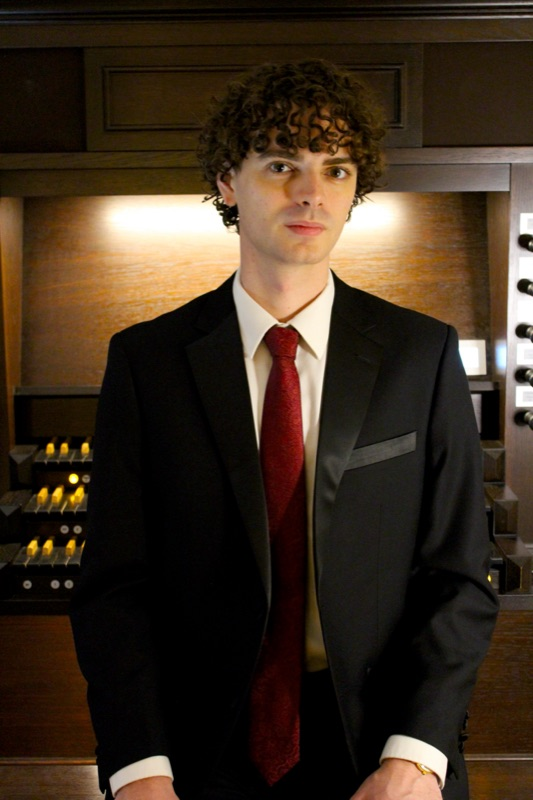

Organ performance, improvisation, and liturgical music

I currently serve as interim organist and choir director at Calvary Episcopal Church in Indian Rocks Beach, Florida, a beachfront parish currently rebuilding from Hurricane Helene. I previously held this position from 2022 to 2025, during which I reinstated full Anglican chant, ran a concert series, organized an Evensong that raised $1,300, and led the documentation and music-related rebuilding efforts after the hurricane, raising $7,100 in grants.
While pursuing my PhD in Geophysics at the University of Florida, I have maintained my passion for organ performance, studying with Dr. Laura Ellis. I also collaborated as a ballet pianist for the UF Dance Department from 2021 to 2024, improvising music for ballet and modern dance classes.
My approach to organ improvisation blends traditional techniques with contemporary musical language, deeply influenced by the French organ tradition. During my summers in Paris for scientific work at IPGP, I continue my improvisation studies with some of the finest organists in France.
Association of Anglican Musicians · $3,500
Awarded the Raymond Glover Grant for Episcopal Liturgical Music to study choral Evensong, Anglican chant, and liturgical improvisation with Dwight Thomas at the Cathedral Church of St. Peter in St. Petersburg, Florida, and with George Nicholls at the American Cathedral in Paris. The grant also funded travel to the 2025 Cincinnati AAM conference.
This work culminated in a choral Evensong at Calvary Episcopal Church during its rebuilding from Hurricane Helene.
My work as an organist and choirmaster focuses on enhancing the liturgical experience through thoughtfully selected music that complements the sacred texts and seasons of The Book of Common Prayer.
Organ improvisation is at the core of my musical practice. I approach it as a dialogue between tradition and innovation, creating spontaneous musical structures that respond to architectural and acoustic spaces.
As a ballet pianist, I worked closely with dancers and choreographers, improvising and adapting classical and contemporary works to support movement and narrative in performance.
My studies in Paris have deeply influenced my musical style, particularly in improvisation, where I draw on the rich tradition of French organ music and its distinctive harmonies and textures.
Calvary Episcopal Church, Indian Rocks Beach, FL
Calvary Episcopal Church, Indian Rocks Beach, FL
University of Florida Dance Department
Grace Presbyterian Church
Dr. Laura Ellis
Prof. Lynn Sandefur-Gardner, Christopher Holloway
Dr. Mitch McKay, Dr. Jasmine Arakawa, Dr. Shirley Blankenship
Casavant Frères, Opus 1475 (renovated 2018)
A 3-manual, 42-rank instrument featuring a rich romantic character with neo-baroque additions. The organ possesses a warm foundation with colorful flutes and strings, and brilliant reeds suitable for both liturgical service and recital repertoire.
Schantz Organ Company (1991, renovated 2015)
A substantial 4-manual instrument with 81 ranks, designed in the American Classic tradition but with significant French romantic and symphonic colors. Features an antiphonal division and horizontal trumpet en chamade.
Cavaillé-Coll (1887, restored by Daniel Birouste 1993)
A historic 3-manual, 59-rank symphonic instrument built by the legendary Aristide Cavaillé-Coll. This organ exemplifies the French Romantic tradition with its powerful foundations, colorful reeds, and expressive capabilities.
For a complete overview of my musical background, positions, and ensemble experience.